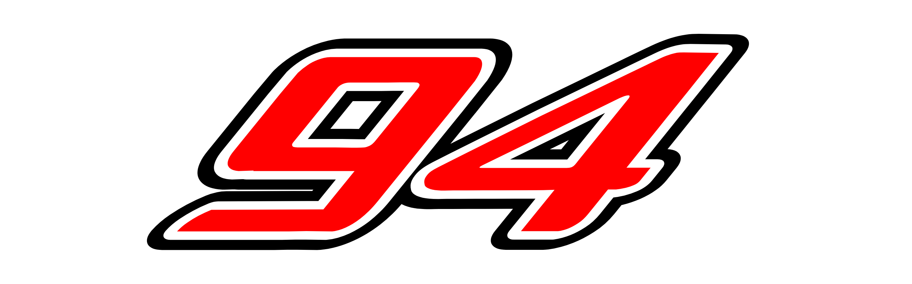

WIRE
 Tymek Kucharczyk applies title pressure in his strong first U.S. Indy NXT season.
Tymek Kucharczyk applies title pressure in his strong first U.S. Indy NXT season.
--:--:--
Tymek Kucharczyk applies title pressure in his strong first U.S. Indy NXT season.

UBBEMABLESKimi Antonelli recovered from a grid penalty to beat teammate George Russell and stretch his championship lead to 66 points. F1 heads to Madrid's all-new street circuit next, MotoGP lands at Aragón, and NASCAR's regular season enters its final laps before the Chase field is set at Darlington. Every series, one page.


A penalty, a virtual safety car, and a late pass on his own teammate — Antonelli leads by 66 points.

Points and playoff-eligible wins, tracked heading into the regular-season finale at Daytona.

A wider, faster street layout arrives north of the border — right in the thick of the title run-in.
A track walk through MotorLand's high-speed final sector, where last year's title fight was decided.

COTA hosts round five of the endurance championship as the Hypercar title fight heads into its final stretch.

The Menards Series title moves off its usual short-track home — a look at what that changes.
One practice session, a sprint qualifying and a short Saturday sprint race set a separate grid before Sunday's main event — worth its own points, decided in about 30 minutes.
→ Full F1 rules guideSixteen drivers enter the playoffs. Four are cut after each three-race round — Bristol, Kansas, Martinsville — until four remain to settle the title in one winner-take-all race at Homestead.
→ Full NASCAR rules guideTwo classes race together on track but for separate titles — top-tier prototypes up front, production-based GT cars fighting their own race within the race.
→ Full WEC rules guideEvery story below is schedule-anchored — previews, explainers, and track guides tied to what's actually coming up on each series' calendar. For results and live timing, follow the series' own broadcast.

Power-unit allocations, floor tweaks, and a driver market still simmering before Zandvoort.
With Imola off the calendar, the Temple of Speed carries the entire tifosi weekend alone.
A brand-new venue joins the calendar in September, closing out the European leg for good.
Points and playoff-eligible wins, tracked heading into the Daytona finale.

The title decider moves back to Homestead-Miami for the first time since 2019.

O'Reilly Auto Parts takes over title sponsorship in 2026, ending an 11-year run for Xfinity.
The Menards Series title moves off its usual short-track home.
A wider, faster street layout arrives north of the border, right in the title run-in.
Two races in 24 hours at the Mile — a look at how teams manage the turnaround.
Indy NXT
A season-long test package and a guaranteed IndyCar start await this year's champion.
A track walk through MotorLand's high-speed final sector.
Saturday afternoons now decide half a season's points.

The Red Bull Ring shifts five weeks later on the 2026 calendar.
COTA hosts round five as the Hypercar title fight heads into its final stretch.
Regional travel disruptions forced a late reshuffle of the season's final two rounds.
Tap a race to jump to that series' page. Calendar covers confirmed rounds through the rest of the 2026 season.
The pinnacle of open-wheel racing returns from its summer shutdown at Zandvoort, with the title fight and a crowded driver market both heating up through a run of eight rounds to close the season.

| Practice 1 | Fri 11 Sep · 13:30 CEST |
| Practice 2 | Fri 11 Sep · 17:00 CEST |
| Practice 3 | Sat 12 Sep · 12:30 CEST |
| Qualifying | Sat 12 Sep · 16:00 CEST |
| Race | Sun 13 Sep · 15:00 CEST |
Kimi Antonelli's astonishing recovery drive from 19th on the grid to win his home Italian Grand Prix — passing George Russell in the closing laps — stretched his championship lead to 66 points. F1 now heads to a brand-new street circuit in Madrid with zero historical setup data for any team.
| Race | Venue | Date |
|---|---|---|
| Spanish Grand Prix NEXT | Madrid Street Circuit (debut), Spain | 11–13 Sep |
| Azerbaijan Grand Prix | Baku City Circuit, Azerbaijan | 24–26 Sep |
| Singapore Grand Prix | Marina Bay, Singapore | 9–11 Oct |
| United States Grand Prix | Circuit of the Americas, Austin | 23–25 Oct |
| Mexico City Grand Prix | Autódromo Hermanos Rodríguez | 30 Oct–1 Nov |
| São Paulo Grand Prix | Interlagos, Brazil | 6–8 Nov |
| Las Vegas Grand Prix | Las Vegas Strip Circuit | 19–21 Nov |
| Qatar & Abu Dhabi Grands Prix | Lusail & Yas Marina | Late Nov–early Dec (season finale) |
One practice session, a sprint qualifying and a short Saturday sprint race set a separate grid before Sunday's main event — worth its own points, decided in about 30 minutes.
→ Full breakdownRace winners take 25 points down to 1 for tenth place, plus extra sprint points on sprint weekends — with 12 rounds left, the championship math still has plenty of room to move.
→ Full breakdownTwo or three practice sessions, knockout qualifying (Q1/Q2/Q3) sets the grid, then Sunday's full-distance race — typically 305km, or about 90 minutes of racing.
→ Full breakdownStandard weekend: FP1 and FP2 run Friday, FP3 Saturday morning, then knockout qualifying Saturday afternoon — Q1 trims 20 cars to 15, Q2 trims 15 to 10, Q3 sets the top 10 grid slots on final one-lap pace.
Sprint weekend (6 of 24 rounds in 2026, including this one): Friday's single practice session is followed by Sprint Qualifying (SQ1/SQ2/SQ3, 12/10/8 minutes, six eliminated each round) to set Saturday's Sprint grid. The Sprint runs Saturday, then a full knockout qualifying session sets Sunday's Grand Prix grid separately.
Grid order otherwise follows qualifying result directly, adjusted for any grid penalties (parts changes, driving infringements) applied after the session.
Straight points table — no playoff, no elimination bracket. Both the Drivers' and Constructors' World Championships are decided by cumulative points across all 24 rounds, race and sprint points combined.
Tiebreaker is a countback: most race wins, then most 2nd-place finishes, then 3rds, and so on. Only Grand Prix wins count toward the countback — Sprint wins don't move the tiebreak.
2026 opened an all-new power unit era: the 1.6L turbo V6 hybrid stays, but the MGU-H is gone and MGU-K output has tripled to 350kW — giving a near-even split between combustion and electric power, and roughly 300% more battery deployment than the previous generation. Cars run on 100% sustainable fuel.
New "active aerodynamics" — movable wing elements that cut drag on straights and add downforce in corners — effectively replace DRS's role with a system built into the car. The cars themselves are smaller and lighter than the 2022–2025 generation.
Pirelli supplies three dry compounds per race weekend from its C1–C5 range (no C6 in 2026); the standard allocation is 13 sets per driver (12 on sprint weekends), and at least two different dry compounds must be used in the race barring wet conditions.
Parc fermé locks car setup once qualifying begins. On a sprint weekend it applies from the start of Sprint Qualifying through the Sprint, lifts briefly ahead of GP qualifying, then re-applies from Q1 through Sunday's race. Permitted work under parc fermé is narrow: tire pressures, the standard front-wing flap adjuster, engine covers, starter batteries, and fuel draining for weighing. A declared change in climatic conditions (wet to dry or back) loosens the rules to allow brake and radiator duct changes.
A penalty, a virtual safety car, and a late pass on his own teammate — Antonelli leads by 66 points.
A brand-new venue joins the calendar in September, closing out the European leg for good.
| Practice | Sat 12 Sep · 7:30 PM CT |
| Qualifying | Sat 12 Sep · 8:40 PM CT |
| Race | Sun 13 Sep · 2:00 PM CT |
Enjoy Illinois 300 (WWT) is next up for NASCAR Cup.
| Race | Venue | Date / Winner |
|---|---|---|
| Cook Out 400 (Richmond) | Richmond Raceway, VA | Joey Logano |
| Dollar Tree 301 (NH) | New Hampshire Motor Speedway, Loudon, NH | Ryan Blaney |
| Coke Zero Sugar 400 (Daytona) | Daytona International Speedway, FL — regular-season finale | Ryan Preece |
| Southern 500 (Darlington) — Playoffs R1 | Darlington Raceway, SC | Christopher Bell |
| Enjoy Illinois 300 (WWT) NEXT | World Wide Technology Raceway, Madison, IL | 2026-09-13 |
| Bristol Night Race — R1 elim. | Bristol Motor Speedway, TN | 2026-09-19 |
| Hollywood Casino 400 (Kansas) | Kansas Speedway, KS — Round of 12 opens | 2026-09-27 |
| South Point 400 (Las Vegas) | Las Vegas Motor Speedway, NV | 2026-10-04 |
| Homestead — Championship | Homestead-Miami Speedway, FL — championship race | 2026-11-08 |
NASCAR dropped the elimination-round Playoff and returned to a straight points Chase — 16 drivers qualify on regular-season points alone and race the full 10-round Chase to Homestead with no cuts.
→ Full breakdownTop 16 in regular-season points after 26 races, full stop — the old "win and you're in" auto-berth is gone for 2026, so every regular-season point matters toward seeding, not just making the cut.
→ Full breakdownEvery race is split into three stages; the top 10 at each of the first two stage breaks score bonus points on top of the finish — so the whole race matters, not just the checkered flag.
→ Full breakdownPractice is a single ~50-minute session, typically Saturday. Qualifying runs two rounds on single timed laps: the 10 fastest from Round 1 advance to a final round where times reset and 1st–10th are set by that round's speed; the rest of the field is set by Round 1 times (or, at tracks that skip qualifying, by prior finishing order or points).
Race distance varies by track — the Daytona 500 runs 200 laps/500 miles; most ovals are shorter.
NASCAR returned to "The Chase" format for 2026, retiring the 2014–2025 elimination-round Playoff (the Round of 16/12/8/Championship 4 structure). The top 16 drivers in regular-season points after 26 races advance — full stop. The old "win and you're in" auto-berth is gone; the field is set purely by regular-season points.
Points reset once, by seed: 1st seed starts the Chase on 2,100 points, 2nd on 2,075, 3rd on 2,065, then each subsequent seed drops 5 points down to 2,000 for 16th.
There are no elimination cuts — all 16 drivers run the complete 10-race Chase, Darlington through the season finale at Homestead-Miami Speedway (which replaces Phoenix as host). The champion is simply whoever holds the most points after the finale — a straight points race within the reset field, not a winner-take-all shootout.
Engine: 358 cu in (5.86L) naturally aspirated pushrod V8, fuel-injected since 2012. Baseline output is 670 hp, boosted to 750 hp for 2026 at road courses and short ovals under 1.5 miles via a larger tapered spacer — the first horsepower bump since the low-power Next Gen era began.
Chassis: steel-tube spec frame with bolt-on, replaceable front and rear clips, and a symmetrical composite body (unlike the aero-skewed Gen 6 car it replaced). It's the first NASCAR car with independent rear suspension — twin wishbones, 5-way adjustable Öhlins dampers.
Wheels are 18-inch aluminum with a single center-lock lug nut, a step up from the 5-lug wheels still used in the lower national series. Chassis weight is roughly 3,200 lb without driver or fuel.
The Damaged Vehicle Policy keeps cars that can't drive to pit road in the race — they're towed to the garage instead of eliminated outright. A 7-minute repair clock applies only to active pit-road repairs, not garage work, so a car can rejoin after longer garage repairs.
Overtime (green-white-checkered) attempts are unlimited. Drivers commit to an inside or outside lane at a marked "choose" cone before the restart, and the overtime line — where the race is declared complete if caution flies — is now the start/finish line itself.
Points and playoff-eligible wins, tracked heading into the Daytona finale.
The title decider moves back to Homestead-Miami for the first time since 2019.
| Practice | Sat 12 Sep · 12:00 PM CT |
| Qualifying | Sat 12 Sep · 1:05 PM CT |
| Race | Sat 12 Sep · 6:30 PM CT |
Race at WWT Raceway is next up for O'Reilly Series.
| Race | Venue | Date / Winner |
|---|---|---|
| Winn-Dixie 250 (Daytona) | Daytona International Speedway, FL | Ryan Sieg |
| Race at Darlington | Darlington Raceway, SC — Chase opener | Sheldon Creed |
| Race at WWT Raceway NEXT | World Wide Technology Raceway, Madison, IL | 2026-09-12 |
| Race at Bristol | Bristol Motor Speedway, TN | 2026-09-18 |
| Homestead — Championship | Homestead-Miami Speedway, FL — championship finale | 2026-11-07 |
The name and title sponsor changed — Xfinity to O'Reilly Auto Parts, after 11 seasons — but the car underneath is its own spec, carbureted and lighter than the Cup Next Gen car, not a shared chassis.
→ Full breakdownMany Cup regulars started here. Weekends are frequently run in conjunction with Cup Series race dates, giving fans a doubleheader at the same track — though a start-limit rule caps how many races Cup regulars can run here.
→ Full breakdownLike Cup, the series moved to a straight-points Chase for 2026 — top 12 in regular-season points advance, no elimination rounds, title settled at Homestead-Miami.
→ Full breakdownSame structure as Cup: a single practice session followed by two-round knockout qualifying — 10 fastest from Round 1 advance to a final round that sets the front of the grid on single-lap pace.
Identical structure to Cup: 55 points for the win, stage points of 10-9-8-7-6-5-4-3-2-1 to the top 10 at each of the first two stage breaks, plus a fastest-lap bonus point.
Renamed for 2026 under a new title sponsorship — O'Reilly Auto Parts, a multi-year deal reported near $15M/year announced August 2025 — succeeding Xfinity (2015–2025), Nationwide (2008–2014), and Busch/Anheuser-Busch (1982–2007) before it. The rules lineage mirrors Cup.
The series also moved to The Chase for 2026: top 12 drivers in regular-season points qualify (versus Cup's 16), seeded on the same reset scale — 1st seed starts on 2,100 points, 2nd on 2,075, 3rd on 2,065, then –5 per seed down to 2,020 for 12th. The Chase runs 9 races (Cup runs 10), Darlington through Homestead-Miami, with no elimination rounds — most points after the finale wins. The "win and you're in" auto-berth is gone, same as Cup.
Same 358 cu in pushrod V8 architecture as Cup, but carbureted rather than fuel-injected (Cup switched to EFI in 2012), and lower-output at 650 hp versus Cup's 670–750 hp.
The body and chassis are a composite, non–Next Gen tube-frame car — roughly 11 in longer, 4 in narrower, and 1 in taller than Cup's Next Gen car, on a 105-inch wheelbase, and about 100 lb lighter than Cup's ~3,500 lb (with driver) car. Wheels are 15-inch steel on 5 lugs, not the Cup car's 18-inch aluminum single-lug setup.
Functions explicitly as NASCAR's national development tier — Cup regulars are limited in how many starts they can make here per season, a longstanding eligibility restriction meant to preserve opportunities for series regulars, distinct from how Cup or ARCA are structured.
O'Reilly Auto Parts takes over title sponsorship in 2026, ending an 11-year run for Xfinity.
A season of Saturday racing builds to a single championship weekend in South Florida.
| Race | Sat 12 Sep · 8:00 PM ET |
Race at Salem is next up for ARCA Menards.
| Race | Venue | Date / Winner |
|---|---|---|
| Illinois State Fairgrounds | Illinois State Fairgrounds, Springfield — one-mile dirt | Max Reaves |
| Atlas 200 (Madison) | Madison International Speedway, Oregon, WI | Tristan McKee |
| DuQuoin State Fairgrounds | DuQuoin State Fairgrounds, IL — dirt mile | Carson Brown |
| Race at Salem NEXT | Salem Speedway, IN | 2026-09-12 |
| Race at Bristol | Bristol Motor Speedway, TN | 2026-09-17 |
| Kansas — Championship | Kansas Speedway, KS — championship finale | 2026-09-25 |
ARCA races a mix of short tracks, dirt miles, and combination weekends with NASCAR's national series — its own spec car, carbureted and higher-revving, sits below O'Reilly Series and Cup equipment.
→ Full breakdownThe Illinois State Fairgrounds and DuQuoin State Fairgrounds dirt miles are annual traditions on the schedule, a rarity at this level of stock car racing — and qualifying format changes track to track to suit them.
→ Full breakdownUnlike Cup and the O'Reilly Series, ARCA has never run a playoff. For the first time since 2021 the season-long points battle is decided at a 1.5-mile intermediate oval rather than a short track.
→ Full breakdownQualifying format varies by track: single-car, one-lap qualifying at short tracks like Hickory; randomly-drawn-group timed qualifying at superspeedways like Daytona; and a two-lap single-car system on doubleheader weekends, where the first lap sets the Race 1 grid and the second sets Race 2's.
Straight points by finishing position, plus bonus points: 1 point for the pole winner. A durability/attendance bonus awards 50 points to any driver who completes every race in a five-race block. Ties are broken by most wins, then most fastest laps.
ARCA has always run — and continues to run for 2026 — a straight full-season points battle with no playoff. Highest cumulative points after the final race of the 20-round schedule, concluding at Kansas, takes the title. That's the clearest structural contrast with Cup and the O'Reilly Series, both of which moved to a Chase format for 2026.
Engine: the spec ARCA Ilmor 396 (ARCA Control Engine), a Chevrolet-LS-family-based, fuel-injected unit producing roughly 700 hp and 500 lb-ft — notably higher output than Cup's pre-2026 baseline, and similar to the O'Reilly Series car.
Chassis: steel tube frame on a 110-inch wheelbase. Bodies are visually similar to Xfinity-era shells but are effectively an older generation of stock car body, and ARCA fields run on noticeably lower budgets than either NASCAR national series above it.
ARCA runs its own restrictor and tapered-spacer packages and aero rules rather than adopting Next Gen equipment — the biggest functional difference fans will notice trackside is the carbureted, higher-revving engine paired with a lighter, less sophisticated chassis than either NASCAR national series.
The Menards Series title moves off its usual short-track home.

Illinois and DuQuoin remain the series' annual dirt tradition — and a wildcard for the points battle.

Álex Palou closed out Laguna Seca in 8th to claim his 5th championship in six years, tying Sébastien Bourdais's record of four straight titles — done and dusted before Scott McLaughlin even took the season-finale win. The 2026 season is complete; 2027 dates to follow.

| 1. Álex Palou | Champion |
| 2. Kyle Kirkwood | −86 pts |
| 3. Christian Lundgaard | 3rd |
Pato O'Ward swept Milwaukee's doubleheader — the first driver to win twice in one day since Rick Mears in 1981 — but it was Palou's 10th-place finish there that actually sealed his 5th title in six years, tying Sébastien Bourdais's record of four straight championships. Scott McLaughlin closed the season with a dominant, if academic, win at Laguna Seca. 2027 schedule to be announced.
| Race | Venue | Winner |
|---|---|---|
| Milwaukee Mile — Race 1 | The Milwaukee Mile | Pato O'Ward |
| Milwaukee Mile — Race 2 | The Milwaukee Mile | Pato O'Ward |
| Championship Finale FINAL | WeatherTech Raceway Laguna Seca | Scott McLaughlin |
Points accumulate across all 18 rounds — no separate playoff round — with the championship simply going to whoever leads the standings after the Laguna Seca finale.
→ Full breakdownUnlike most single-seater series, IndyCar mixes all three disciplines in one season, with qualifying format changing to match — knockout rounds on road/street circuits, single-car runs on ovals.
→ Full breakdownRoad and street courses only — a driver-controlled overtake boost stacks with a newer hybrid energy-recovery system to give attacking cars a real straight-line advantage.
→ Full breakdownRoad and street course weekends run practice sessions followed by 3-round knockout qualifying, with progressively smaller groups culminating in a "Firestone Fast Six" shootout for pole.
Oval qualifying (outside the Indy 500) uses a single- or multi-lap average format, with cars running individually rather than in knockout groups.
The Indianapolis 500 runs its own two-day system for the 33-car field: Day 1 locks positions 16–33; Day 2 sees drivers 10–15 fight through a "Final 15" round for the last three Fast 12 spots, the Fast 12 runs a four-lap average, and the top 6 advance to the Fast Six shootout for pole.
Straight points table across the full season — no playoff, no elimination bracket. The champion is whoever holds the highest cumulative points after the final race. No races award double points in 2026, and the Thermal Club exhibition event is not a points race at all.
Current chassis is the Dallara DW12 in its later evolution — a spec tub for every entrant. Engines are 2.2L twin-turbo V6s from one of the sport's two suppliers, Chevrolet or Honda.
Since mid-2024, a 48V hybrid unit (MGU plus a 20-ultracapacitor energy store) sits in the bellhousing. Regeneration happens automatically under braking/throttle; deployment is always manual, via a paddle or button. Combined with Push-to-Pass, road and street cars can exceed 800 hp on demand.
A next-generation chassis and engine package — the IR-28, a Dallara-built 2.4L V6 targeting 760 hp — has been unveiled but isn't due until 2028; it is not the current spec.
Push-to-Pass is a road/street-course-only overtake assist adding roughly 50–60 extra horsepower on demand. Allocations vary by venue: 15 seconds per push and 150 seconds total per race at St. Petersburg, Detroit, Laguna Seca, and Thermal; 20 seconds per push and 200 seconds total at the other seven road/street venues. It's unavailable on ovals and disabled for the opening laps everywhere it's used.
A wider, faster street layout arrives north of the border, right in the title run-in.
Two races in 24 hours at the Mile — a look at how teams manage the turnaround.
Indy NXTSeason CompleteTymek Kucharczyk took the final race of the season at WeatherTech Raceway Laguna Seca — title-deciding finale.
| Race | Venue | Winner |
|---|---|---|
| Race at Milwaukee Mile | West Allis, Wisconsin — support race for IndyCar | Max Garcia |
| Laguna Seca — R1 | WeatherTech Raceway Laguna Seca, Monterey, CA | Josh Pierson |
| Laguna Seca — Championship | WeatherTech Raceway Laguna Seca — title-deciding finale | Tymek Kucharczyk |
A season-long test package, plus a guaranteed IndyCar start, await the champion — decided the same way as its parent series, straight points across the full season.
→ Full breakdownEvery team runs an identical Dallara IL-15 with a 450 hp Mazda-AER turbo four — a deliberately simpler package than IndyCar's, built to put driver development ahead of technology.
→ Full breakdownLaguna Seca hosts a season-closing doubleheader — each driver's best qualifying lap sets Race 1's grid, second-best sets Race 2's, and Sunday's race crowns the champion.
→ Full breakdownOval qualifying runs single-car in reverse championship order — two warm-up laps, then two green-flag laps, with pole going to the fastest aggregate speed over those two laps.
Road and street course qualifying splits the field into two groups, each given 10 minutes of track time; the fastest overall time across both groups takes pole.
On doubleheader weekends, each driver's best qualifying lap sets the Race 1 grid and their second-best lap sets Race 2's. Weekends typically run one or two practice sessions plus qualifying and one or two races; pit stops usually aren't mandatory.
Winner scores 50 points, 2nd scores 40, 3rd scores 35, then declines by 2 per position down to 20 for 10th; from 11th on it declines by 1 per position. Bonus points: 1 for pole, 1 for leading a lap, plus 2 more for leading the most laps.
Straight full-season points table, no playoff — the same philosophy as its parent IndyCar Series. The 2026 season runs 17 races, its largest calendar since 2021.
One-make spec series: every car is a Dallara IL-15 with a carbon-fiber honeycomb composite monocoque. The engine is a Mazda-AER P63, a 2.0L turbocharged inline-4 producing 450 hp, plus 50 hp available on Push-to-Pass. Cars weigh roughly 1,400 lb, and Firestone is the control tire supplier.
Indy NXT functions explicitly as the top rung of the Road to Indy ladder feeding directly into IndyCar. Its Push-to-Pass system and stripped-down aero package are deliberately simpler than IndyCar's own, keeping the emphasis on driver development rather than technology.
Indy NXT
A season-long test package and a guaranteed IndyCar start await this year's champion.
Indy NXT
A doubleheader finale means the championship could flip twice in 18 hours.
| Free Practice 1 | Fri 11 Sep · 10:45 CEST |
| Free Practice 2 | Fri 11 Sep · 15:00 CEST |
| Free Practice 3 | Sat 12 Sep · 10:10 CEST |
| Qualifying | Sat 12 Sep · 11:15 CEST |
| Sprint | Sat 12 Sep · 15:00 CEST |
| Warm-Up | Sun 13 Sep · 9:40 CEST |
| Race | Sun 13 Sep · 14:00 CEST |
San Marino GP (Misano) is next up for MotoGP.
| Race | Venue | Date / Winner |
|---|---|---|
| Aragón GP | MotorLand Aragón, Spain | Marc Márquez |
| San Marino GP (Misano) NEXT | Misano World Circuit, Italy | 2026-09-13 |
| Austrian GP (Red Bull Ring) | Red Bull Ring, Austria | 2026-09-20 |
| Japanese GP (Motegi) | Mobility Resort Motegi, Japan | 2026-10-04 |
| Indonesian GP (Mandalika) | Pertamina Mandalika Circuit, Indonesia | 2026-10-11 |
| Australian GP (Phillip Island) | Phillip Island Grand Prix Circuit, Australia | 2026-10-25 |
Every round now runs a shorter Saturday sprint worth points of its own, alongside Sunday's full-length grand prix — meaning a rider's weekend can be won or lost before Sunday even starts.
→ Full breakdownWeaker manufacturers are ranked and given more testing, development freedom, and flexible tire allocation than the frontrunners — a deliberate competitive-balancing mechanism unique to MotoGP among the series on this site.
→ Full breakdownRather than a time addition, riders who break the rules must take a marked, slower alternate line through a specified corner — typically costing 2–4 seconds, with a set number of laps to comply.
→ Full breakdownFriday: FP1 (45 min, morning) and FP2 (60 min, afternoon) — FP2's combined time decides which 10 riders go straight to Q2 and which have to fight through Q1.
Saturday: FP3 (30 min), then Q1 (15 min, top 2 advance) and Q2 (15 min). Q2 sets grid positions 1–12 for both the Sprint and Sunday's race; the rest of the grid is filled by Q1 non-advancers on their Q1 times. The Sprint itself runs Saturday afternoon, roughly half Grand Prix distance.
Sunday: a 10-minute warm-up, then the Grand Prix at full distance in the afternoon. The grid holds 22 riders, arranged 3 per row across 11 rows.
Straight cumulative points table across the full season — no playoff. Riders', Constructors', and Teams' World Championships all run in parallel and are all decided the same way.
2026 is the final season of the current formula — 1000cc engines on Michelin control tires. A major reset to 850cc engines and Pirelli control tires arrives for 2027, so treat this season's specs as expiring, not permanent.
Engines are frozen mid-tier for 2026: Ducati, KTM, and Aprilia must race on engines homologated in 2025; Honda could homologate once at the start of the season but can't change it mid-year; Yamaha, still in the lowest concessions tier, retains in-season development freedom.
The concessions system ranks constructors A–D by their share of the prior season's constructors' points. Lower-ranked manufacturers get more test days, more permitted engine designs, aero upgrade allowances, and more flexible tire allocation than the frontrunners — a deliberate competitive-balancing mechanism unique to MotoGP among the series covered on this site.
The long lap penalty (introduced 2019) sends an offending rider through a marked, slower alternate line at a specified corner rather than adding time after the fact — typically costing 2–4 seconds. Riders get 3 laps to comply, or 5 if a double long-lap penalty is issued.
The sprint format itself remains the series' defining structural quirk versus every other championship on this site — nearly every round is effectively two points-scoring races.
A track walk through MotorLand's high-speed final sector.
Saturday afternoons now decide half a season's points.
The Red Bull Ring shifts five weeks later on the 2026 calendar, into the flyaway send-off slot.
| Free Practice 1 | Fri 25 Sep · 10:15 JST |
| Free Practice 2 | Fri 25 Sep · 14:30 JST |
| Free Practice 3 | Sat 26 Sep · 9:50 JST |
| Hyperpole | Sat 26 Sep · 15:20 JST |
| Race | Sun 27 Sep · 11:00 JST |
6 Hours of Fuji is next up for WEC.
| Race | Venue | Date / Winner |
|---|---|---|
| Lone Star Le Mans (COTA) | Circuit of the Americas, Austin, TX | Ferrari #50 (Fuoco/Molina/Nielsen) |
| 6 Hours of Fuji NEXT | Fuji Speedway, Japan | 2026-09-27 |
| 6 Hours of Barcelona | Circuit de Barcelona-Catalunya, Spain — inaugural | 2026-10-18 |
| 6 Hours of Monza — Season Finale | Autodromo Nazionale Monza, Italy — title-deciding finale | 2026-11-08 |
Two classes race together on track but for separate titles — top-tier prototypes up front under Balance of Performance, production-based GT cars fighting their own race within the race.
→ Full breakdownQatar and Bahrain were dropped from the back end of the calendar over regional travel and freight disruptions, replaced by inaugural Barcelona and returning Monza rounds.
→ Full breakdownMost rounds run 6 hours, but the calendar's centerpiece — the 24 Hours of Le Mans — is four times that, and points scale up with race length to match.
→ Full breakdownQualifying runs a Hyperpole system: an initial ~30-minute session sets who advances, then Hyperpole itself runs in stages — an opening round narrows the field, a final round is a one-shot pole shootout — for each class separately. At Le Mans specifically, the top 15 Hypercars and top 12 LMP2/LMGT3 cars advance to Hyperpole.
Race distance varies by round: 6 hours at most stops (Imola, Spa, São Paulo, Fuji), 8–10 hours at a couple of others, and 24 hours at Le Mans.
Straight points table, no playoff, across all 8 rounds of the season. Separate championships run in parallel: Hypercar Drivers' and Manufacturers' World Championships, and LMGT3 Drivers' and Teams' titles — manufacturer works entries compete in Hypercar, customer GT3-spec teams in LMGT3.
Hypercar uniquely blends two rulebooks converging on similar performance: LMH (Le Mans Hypercar — manufacturers largely free to design their own chassis, aero, and hybrid system) and LMDh (a defined-components approach: chassis from one of four approved suppliers, a single-source rear-axle hybrid system). Both compete against each other under Balance of Performance.
The hybrid envelope runs to roughly 500kW (~680 hp) combined output; a ~200kW (272 hp) front-axle motor-generator engages above a set speed threshold, making the cars four-wheel-drive under hybrid boost even though the combustion engine only drives the rear wheels, through a 7-speed sequential gearbox.
Balance of Performance (BoP) equalizes power, weight, aero, and fuel flow across different chassis and engine combinations so LMH and LMDh cars — and different manufacturers — can race competitively together. For 2026, BoP calculations use only the best two of the most recent races (down from three) to converge faster; Le Mans uses its own standalone BoP based on homologation data rather than recent-race form.
Tires are single-supplier and class-specific: Michelin for Hypercar, Goodyear for LMGT3, which itself is homologated to the customer-racing GT3 ruleset shared with GT3 categories worldwide.
Every driver carries an FIA-assigned category — Platinum, Gold, Silver, or Bronze — based on racing record. Hypercar lineups cannot include a Bronze-rated driver (Silver/Gold/Platinum only), while LMGT3 lineups must include at least one Bronze driver plus another rated Bronze or Silver — a deliberate rule keeping the GT3 class accessible to gentleman/am drivers rather than turning pro-only.
Teams typically rotate up to 3 drivers per car, with individual stints generally running 45 minutes to an hour, plus overall maximum driving-time caps per event — endurance-specific fatigue-management rules with no equivalent among the other series on this site.
COTA hosts round five as the Hypercar title fight heads into its final stretch.
Regional travel disruptions forced a late reshuffle of the season's final two rounds.
NASCAR's third national series enters 2026 under the same Chase framework now shared with Cup and the O'Reilly Series, plus a genuine grid shake-up: Ram joins as a manufacturer for the first time in years, fielding a five-truck Kaulig Racing program alongside Chevrolet, Ford, and Toyota. The regular season closes at New Hampshire before a seven-race Chase settles the title at Homestead.


| Race | Thu 17 Sep · 8:00 PM ET |
Layne Riggs' late pass for the win at New Hampshire's regular-season finale locked in the 10-truck Chase field — now the bracket resets at Bristol's high-banked concrete short track, where one bad night can end a title bid outright.
| Race | Venue | Date |
|---|---|---|
| UNOH 250 presented by Ohio Logistics NEXT | Bristol Motor Speedway | 17 Sep |
| RaceToStopSuicide.com 200 | Kansas Speedway | 26 Sep |
| Ecosave 200 | Charlotte Motor Speedway (oval) | 9 Oct |
| Craftsman 150 | Phoenix Raceway | 16 Oct |
| Love's RV Stop 225 | Talladega Superspeedway | 23 Oct |
| Slim Jim 200 | Martinsville Speedway | 30 Oct |
| Baptist Health 200 (Championship) | Homestead-Miami Speedway | 6 Nov |
Ten trucks qualify on regular-season points alone, seeded into a reset points scale, then get cut down through the Chase — Round of 10, Round of 8, and a final four at Homestead.
→ Full breakdownTrucks are the last NASCAR national series running a carburetor rather than fuel injection — one of several real mechanical differences hiding under the pickup bodywork.
→ Full breakdownA five-truck Kaulig Racing program brings Ram into NASCAR national competition for the first time in years, joining Chevrolet, Ford, and Toyota on the grid.
→ Full breakdownA single practice session is followed by single-truck time-trial qualifying: two timed laps at tracks 1.25 miles and under, one flying lap at longer ovals, and knockout-style group qualifying on road courses.
Truck races are frequently run as Friday-night companion events to Cup and O'Reilly Series weekends — Bristol, Martinsville, Homestead, and Phoenix all run their Truck race on a Friday during the Chase — though New Hampshire's Aug 22–23 weekend runs the Truck race on Saturday alongside a Whelen Modified Tour doubleheader, one day ahead of Sunday's Cup race.
NASCAR reverted to "Chase" branding across all three national series for 2026, ending the 2016–2025 elimination-bracket era. The Truck field is 10 trucks, seeded entirely by regular-season points — no automatic bids for race winners outside the top 10.
The regular-season champion opens the Chase with 2,100 reset points, a 25-point cushion over 2nd (2,075); 3rd on down drops in 5-point steps. From there: a Round of 10 (Bristol, Kansas, Charlotte — back to the oval layout for 2026) cuts the field to 8; a Round of 8 (Phoenix, Talladega, Martinsville) cuts it to the final 4; those four race for the title at Homestead, where the highest finisher wins the championship outright.
Also new for 2026: Cup drivers with 3+ years of experience can now run 8 Truck races (up from 5) — but remain barred from all 7 Chase races and the finale, keeping the title fight to series regulars.
Chassis: a steel tube-frame design with an integrated roll cage — a different platform from Cup's composite/unibody-style Next Gen car. Suspension is a solid, live rear axle; unlike Cup's Next Gen car, Trucks (like the O'Reilly Series) run no independent rear suspension.
Engine: a spec Ilmor NT1 crate V8, 358 cu in (5.86L), pushrod, naturally aspirated — and carbureted, making Trucks the last NASCAR national series still running a carburetor rather than fuel injection. Output is roughly 650 hp unrestricted, dropping to about 450 hp behind a restrictor plate/tapered spacer at Talladega.
Transmission is a 4-speed manual in an H-pattern, shared with the O'Reilly Series car (Cup runs a 5-speed sequential transaxle). Wheels are 15-inch steel on 5 lugs, wheelbase is 112 inches (versus Cup's 110 and the O'Reilly car's 105), and minimum chassis weight is roughly 3,200 lb without driver or fuel.
Ram joins as a manufacturer for 2026 — a five-truck Kaulig Racing program and the series' first new OEM addition in years, racing alongside Chevrolet, Ford, and Toyota.
Tandem drafting — two trucks locked nose-to-tail to build speed — has been a black-flag offense since 2014, a response to safety incidents unique to how these trucks draft compared to Cup or O'Reilly Series cars.
Minimum driver age is notably younger than Cup or the O'Reilly Series: 18 for ovals 1.33 miles and longer, but just 16 for shorter tracks and road courses — reflecting the Truck Series' role as NASCAR's entry-level national development tier.
Tyler Ankrum clings to the final Chase transfer spot by 20 points as the regular season closes.
Bonus playoff points and win-and-you're-in are gone — the field is now set on regular-season points alone.
Kaulig Racing brings a new manufacturer into national NASCAR competition for the first time in years.
Sami Pajari's historic run of three straight wins at Estonia, Finland and Paraguay has turned the title fight on its head, cutting Elfyn Evans's championship lead to just 20 points with three rounds to go. The series heads to the gravel of Chile next.
| Shakedown | Wed 9 Sep |
| Leg 1 | Thu–Fri 10–11 Sep |
| Leg 2 | Sat 12 Sep |
| Leg 3 + Power Stage | Sun 13 Sep |
Sami Pajari's third consecutive win at Paraguay — a first in WRC history — cut Elfyn Evans's championship lead from 30 points to 20, with Evans on 216 and Pajari on 196 heading into Chile. Oliver Solberg sits third on 175. Chile can't settle the drivers' title outright, but Toyota Gazoo Racing can clinch a record-equalling manufacturers' crown if it extends its lead by six points.
| Rally | Venue | Date |
|---|---|---|
| Rally Chile Biobío NEXT | Concepción, Chile | 10–13 Sep |
| Rally Italia Sardegna | Sardinia, Italy | 1–4 Oct |
| Rally Saudi Arabia (season finale) | Jeddah, Saudi Arabia | 11–14 Nov |
A rally runs across closed public and forest roads split into timed special stages over three or four days — there's no single circuit, and the route changes every event.
→ Full breakdownBeyond the 25-18-15... points for outright rally position, the final Sunday adds two more bonus scoring opportunities worth up to 10 extra points combined.
→ Full breakdownRally1 cars dropped their hybrid units after 2024. A bigger regulation overhaul with alternate bodywork options was proposed for 2026 but has been pushed back to 2027.
→ Full breakdownUnlike circuit racing, a WRC round is contested over closed public and forest roads specific to that event, split into 15-20 timed special stages run across three competitive legs (typically Friday through Sunday), preceded by a shakedown stage for setup and reconnaissance.
Crews complete limited pre-event reconnaissance runs to prepare pace notes, then tackle the live stages against the clock one car at a time, with road position and running order adjusted daily based on the standings.
Straight full-season points table across all 14 rounds — no playoff. Separate titles run in parallel for Drivers', Co-Drivers', and Manufacturers', all decided by cumulative points after the Saudi Arabia finale.
Rally1 cars have run without hybrid assistance since 2025, when the plug-in units introduced in 2022 were dropped. Cars use a 1.6-litre turbocharged four-cylinder engine on 100% fossil-free fuel, with the air restrictor trimmed from 36mm to 35mm and minimum weight lowered to 1,180kg to keep performance in line with the outgoing hybrid-era cars.
A more sweeping overhaul — offering manufacturers alternate bodywork options (B-class, C-class, compact SUV, or a bespoke concept car) on a common safety cell, with power capped around 330bhp and a €400,000 cost cap — was proposed to arrive for 2026, but the FIA pushed the changeover back, meaning the current Rally1 ruleset carries through this season with 2027 now the target for the next generation of cars.
Running order on Saturday and Sunday flips to fastest-first from the previous day's classification, unlike circuit racing's grid-holds-until-the-next-session structure — meaning the rally leader often opens the road on loose-surface stages, sweeping debris into the racing line for those behind.
Hankook is the championship's sole tyre supplier across all conditions, supplying separate compounds for dry and wet asphalt and a dedicated gravel tyre used across the loose-surface rounds like Chile.
Three wins in a row is a WRC first — and it's turned a comfortable title lead into a genuine fight.
Up to 10 extra points are on the table before the rally even technically ends.
Season 12 wrapped up in London in mid-August, closing out the Gen3 Evo era. The championship is now in its off-season, gearing up for the biggest campaign in its history: a 21-race, 13-city GEN4-era season opening under the lights in Jeddah this December.

| Practice + Qualifying | Fri 18 Dec |
| Race 1 — E-Prix Unleashed | Fri 18 Dec, night |
| Race 2 — E-Prix | Sat 19 Dec, night |
The GEN4 car debuts with 600kW of power (roughly 815hp), active all-wheel drive for the full race rather than just under braking, and a 0-100kph time of 1.8 seconds. Jeddah hosts a season opener for the first time, pairing a new short-format "E-Prix Unleashed" sprint race with the traditional E-Prix on the same weekend — the first of eight double-header events on the championship's longest-ever calendar.
| Event | Venue | Date |
|---|---|---|
| Jeddah E-Prix (season opener) NEXT | Jeddah Corniche Circuit, Saudi Arabia | 18–19 Dec |
| Mexico City E-Prix | Autódromo Hermanos Rodríguez | 16 Jan 2027 |
| Austin E-Prix (debut) | Circuit of the Americas, USA | 6 Feb 2027 |
| Miami E-Prix | Miami International Autodrome, USA | 20 Feb 2027 |
| São Paulo E-Prix | Anhembi Sambadrome, Brazil | 13 Mar 2027 |
| ...season continues through Europe and Asia | Berlin, Monaco, Zandvoort, Brands Hatch, Madrid, Sanya, Shanghai | May–Jul 2027 |
| Tokyo E-Prix (season finale) | Tokyo Street Circuit, Japan | 24–25 Jul 2027 |
New for the GEN4 era: double-header weekends now pair a short, unrestricted "E-Prix Unleashed" sprint with a traditional strategic E-Prix, rather than two races of similar length.
→ Full breakdown600kW of power, permanent active all-wheel drive, and a sub-2-second 0-100kph time headline the new generation of car debuting this December.
→ Full breakdownFormula E has traditionally raced on temporary street circuits in city centers — though the GEN4 era leans further into permanent road courses like COTA and Zandvoort to handle the car's extra speed.
→ Full breakdownStandard weekends run practice and a knockout qualifying format (duels or group-based depending on the season) to set the grid, followed by a single E-Prix.
New for the GEN4 era: double-header weekends — eight of them on the 2026-27 calendar — pair a shorter, higher-power "E-PrixUnleashed" sprint race with a traditional E-Prix on the same weekend, giving fans two distinct styles of racing rather than two similar-length races.
Race points follow a Formula-style scale for the top 10 finishers, with additional bonus points historically available for pole position and fastest lap. Both races on a double-header weekend award full championship points.
Straight cumulative points table across the full season — no playoff. Drivers' and Teams' World Championships are decided by total points after the season finale, this year a double-header in Tokyo.
The outgoing Gen3 Evo package (used through Season 12) was the first Formula E car to race internationally with all-wheel drive, combining a 250kW front powertrain with a 350kW rear unit for up to 600kW combined, and was the first-ever "net zero carbon" race car by design.
The incoming GEN4 car, debuting in Jeddah this December, raises peak power to 600kW (roughly 815hp) with permanent active all-wheel drive throughout the race (rather than only under braking), 700kW of regenerative braking capacity, and a 0-100kph time of just 1.8 seconds — a significant step up in performance that has pushed the calendar toward faster, more permanent circuits.
Formula E has historically relied on tools like Attack Mode (a power boost activated by driving through an off-line activation zone) to encourage overtaking on tight street circuits — specifics of how these carry over are among the details still being finalized for the GEN4 ruleset.
Three new venues headline the 2026-27 calendar: the Circuit of the Americas (Austin), Zandvoort, and Brands Hatch — the latter replacing London's ExCeL as the series' UK home.
More power, permanent all-wheel drive, and a night race in Jeddah to kick it all off.
21 races, 13 cities, three brand-new venues — what's driving the expansion.